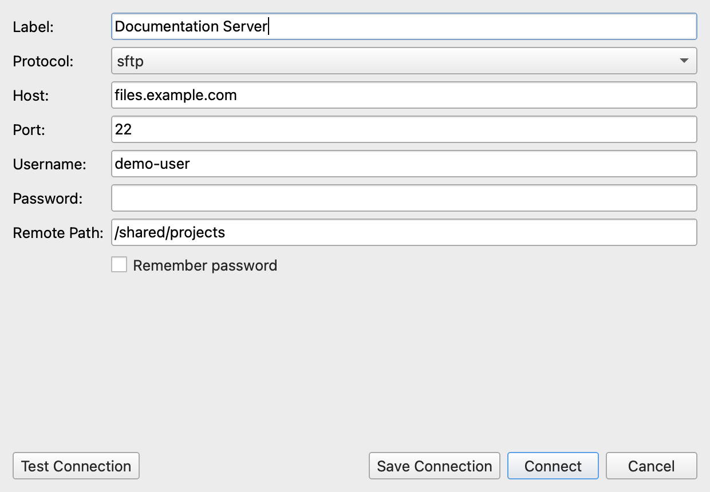
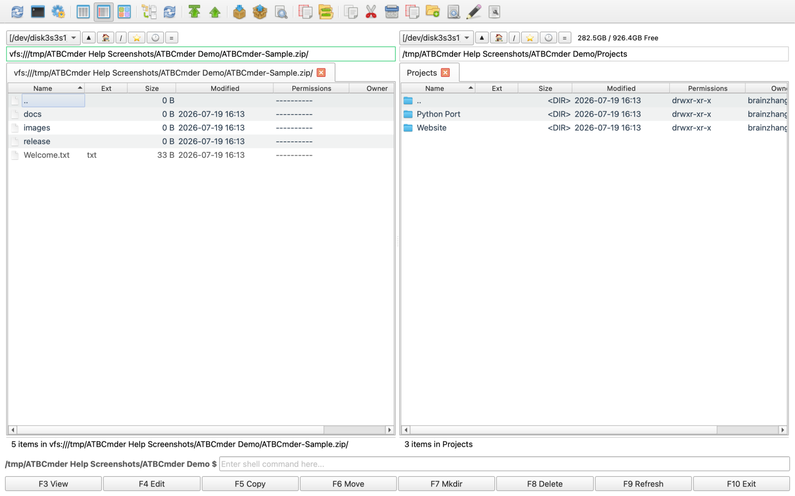
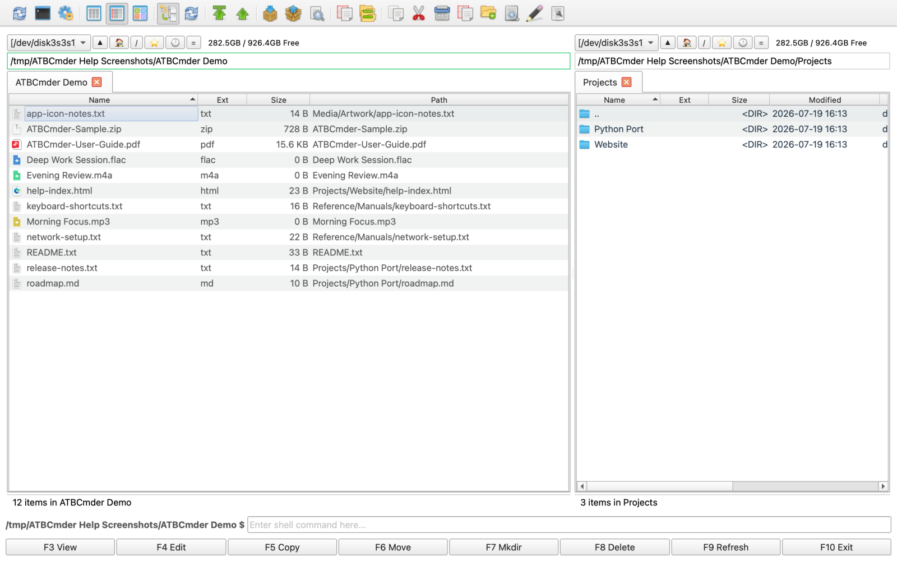
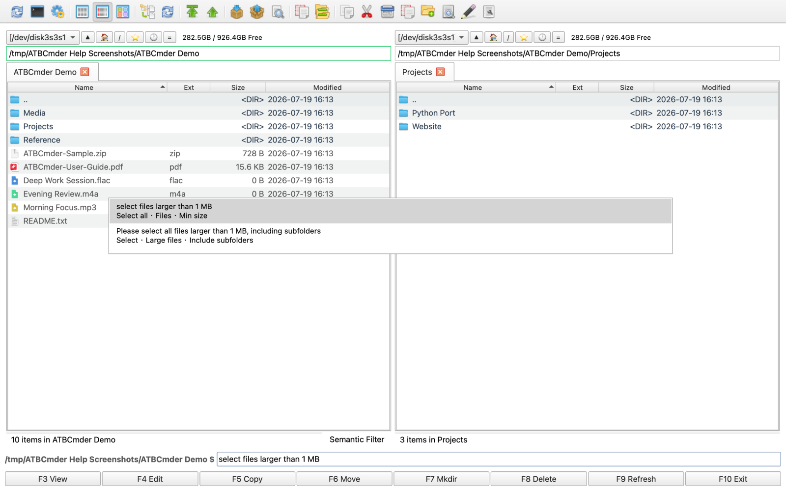

Advanced Features¶
ATBCmder offers a powerful set of advanced features for power users, ranging from Virtual File Systems to AI-assisted Semantic Commands. This guide explains how to leverage these tools to maximize your productivity.
1. Network Virtual File System (VFS)¶
ATBCmder allows you to interact with remote file systems as if they were local directories. Supported protocols include FTP, SFTP, WebDAV, and Samba.

- Seamless Integration: Once connected, remote files appear in the standard file panels. You can copy, move, delete, and rename files just like local operations.
- Asynchronous Transfers: Network operations are executed in a background thread, ensuring the UI remains responsive during large transfers.
- Connection: Connections are managed securely. Passwords are not saved to XML config files to ensure credential security.
2. Archive VFS and Repacking¶
Archives are treated as Virtual File Systems (vfs://), meaning you can browse inside .zip, .tar, and .7z files natively without extracting them first.

- Native Browsing: Navigate into archives directly from the file panel.
- Modifying Archives: Need to edit a file inside a
.zip? Open it, edit it, and ATBCmder's RepackWorker will safely extract, wait for modifications, and repack the file for you. - Conflict Resolution: During extraction or repacking, conflicts are handled gracefully with intuitive dialogs.
3. Branch View (Flat View)¶
Sometimes you need to see all files inside a directory and all of its subdirectories in a single, flat list.

- Toggle: Press
Cmd+Bto activate or deactivate Branch View for the active panel. - Exit Quickly: You can press
EscorBackspaceto quickly exit the flat view and return to standard directory browsing. - Streaming Scan: Directory scanning is streamed asynchronously. It avoids UI freezing even when scanning tens of thousands of files.
- Path Column: In Branch View, a "path" column becomes visible, showing the relative directory of each file.
- Configuration: Soft caps and batch rendering sizes can be tweaked in the settings for maximum performance.
4. Semantic Command¶
Semantic Command is a natural language interface that brings unparalleled power to file filtering, selection, and searching. It leverages macOS's Spotlight (mdfind) for rapid indexing.

- Activation: Press
/orCmd+Fto open the Semantic Command input at the bottom of the active panel. - Natural Language: Type commands like "Select all files larger than 1MB" or "Find PDF files modified today".
- Scoping: By default, searches are scoped to the current directory. Prefix your command with
//to perform a global Spotlight search (e.g.,//today modified pdf). - Help & History:
- Type
/helpto view a list of supported command templates and examples. - Type
/historyto replay recent semantic commands.
5. Full Command Parity & Advanced Configuration¶
For users migrating from traditional dual-pane managers like Double Commander, ATBCmder retains incredible flexibility.
- Double Commander Hotkeys: By default, ATBCmder uses classic Double Commander shortcuts (
F5for Copy,F6for Move,F7for MkDir,F8for Delete,Tabfor panel switching, etc.). - Internal Commands: Over 189 internal
cm_*commands are available to be mapped to custom shortcuts, toolbars, or menus. - Test Mode Configurations: Developers and tinkerers can load ATBCmder with an isolated
.test_configconfiguration using theATBCmder_test.shscript, allowing you to try new shortcuts or settings without breaking your primary configuration.
Next Steps: Now that you've mastered the advanced features, check out our Troubleshooting Guide if you encounter any unexpected behavior.